7 月 9 日：GaussFusion 等视觉表征主线更新
本期聚焦通用视觉表征、视觉语言预训练与视频自监督中最值得跟进的论文，并保留 CCF A/B、OpenReview 与 arXiv 状态线索。
第一篇读 GaussFusion，重点看它如何把 3D Gaussian 的 masked reconstruction、salience-guided masking 和 image-text semantic alignment 组合成预训练目标。第二篇读 Breaking Spurious Correlations via Cross-Variant SSL，把它和 DINO/CLIP 的 object-centric augmentation、counterfactual generation 线放在一起看。第三步读 Vision as Unified Multimodal Generation 与 From RGB Generation to Dense Field Readout，它们分别回答“统一视觉任务接口”和“生成式 DiT token 是否可直接读出 dense fields”。最后把 SAMPLe、Analysis-by-Proxy、ELSA3D、MoWorld、SegAnswer 作为 VLM/3D/world-model 表征接口补充；取证和气味跨模态项只需扫读方法图。
论文索引
| 优先级 | 论文 | 类型 | 相关性 | 一句话理由 |
|---|---|---|---|---|
| P0 | GaussFusion: Towards Multimodal 3D Gaussian Pretraining | arXiv new; multimodal 3D Gaussian pretraining; masked Gaussian modeling | 高 | 把 masked Gaussian modeling 与图文语义对齐合并，是今天最直接的通用 3D/视觉表征预训练论文。 |
| P0 | Breaking Spurious Correlations via Generative Randomization and Cross-Variant Self-Supervised Learning | arXiv new; CVPR Workshop 2026 GCV; cross-variant SSL | 高 | 把生成式 counterfactual 当作正样本构造，直接训练背景不变的 object-centric 表征。 |
| P1 | Vision as Unified Multimodal Generation | arXiv new; unified multimodal vision foundation model | 中高 | 把多种视觉任务统一成文本/图像生成接口，展示通用 VFM 可以不靠专用 head 覆盖 dense 与 symbolic tasks。 |
| P1 | From RGB Generation to Dense Field Readout: Pixel-Space Dense Prediction with Text-to-Image Models | arXiv new; generative pretraining for dense prediction | 中高 | 直接讨论如何从文本到图像生成预训练中读出 dense fields，关系到生成式 VFM 的空间表征可用性。 |
| P1 | SAMPLe: SAM-based Optimizer for Prompt Learning in VLMs | arXiv new; ECCV main; VLM prompt learning optimizer | 中高 | 不是 SSL 目标，但直接影响 CLIP/VLM prompt tuning 的泛化，且 comments 标注 ECCV 主会。 |
| P2 | Analysis-by-Proxy: Localization Signals in VLMs Operating as Condition Encoders | arXiv new/cross; ICML 2026 Mechanistic Interpretability Workshop Spotlight; VLM localization analysis | 中高 | 诊断 VLM 作为 condition encoder 时空间信号是否真正被读出，有助于理解视觉表征在生成编辑管线中的丢失。 |
| P2 | ELSA3D: Elastic Semantic Anchoring for Unified 3D Understanding and Generation | arXiv new/cross; 3D foundation model; cross-modal semantic anchoring | 中高 | 通过 scale-aware 3D tokenizer 和 anchor tokens 组织文本-3D 对齐，适合作为 3D VFM/VLM 接口参考。 |
| P2 | MoWorld: A Flash World Model | arXiv new; video/world model pretraining and distillation | 中 | 强调 world model 的数据引擎、cross-frame pretraining 和 distillation，方法可迁移但应用偏生成/交互。 |
| P2 | Segmentation before Answering: Pixel Grounding for MLLM Visual Reasoning | arXiv new/cross; visual-token grounding for MLLM reasoning | 中 | 把 MLLM 的 zoom-in 单位从 box 换成 mask，并讨论 segmentation patches 与 visual tokens 的对齐。 |
| P3 | Generalized Synthetic Image Detection with Enhanced RGB-Noise Representation Learning | arXiv new; CLIP/noise representation learning for synthetic image detection | 中 | 任务是生成图像取证，但 RGB-Noise 双分支和 hard-sample contrastive 对鲁棒表征有参考价值。 |
| 扫读 | What Images Cannot Say: Language-Guided Olfactory Representation Learning | arXiv new/cross; ECCV 2026; multimodal olfactory representation | 中低 | ECCV 状态明确，但核心是气味/电子鼻跨模态学习，和通用视觉自监督只弱相关。 |
主线阅读
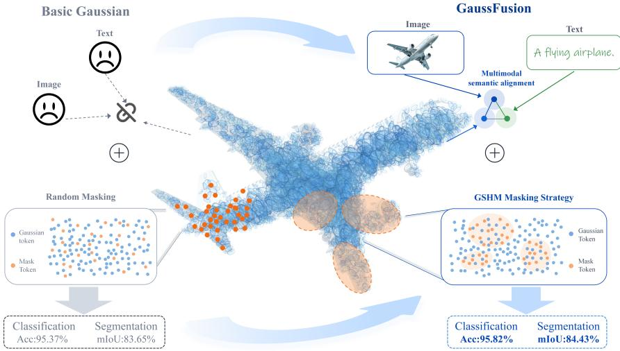
GaussFusion: Towards Multimodal 3D Gaussian Pretraining
高相关；详见方法、贡献和实验边界。
方法：把 masked Gaussian modeling 与图文语义对齐合并，是今天最直接的通用 3D/视觉表征预训练论文
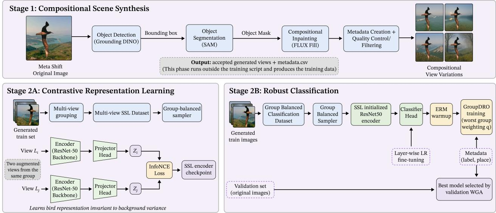
Breaking Spurious Correlations via Generative Randomization and Cross-Variant Self-Supervised Learning
高相关；详见方法、贡献和实验边界。
方法：把生成式 counterfactual 当作正样本构造，直接训练背景不变的 object-centric 表征
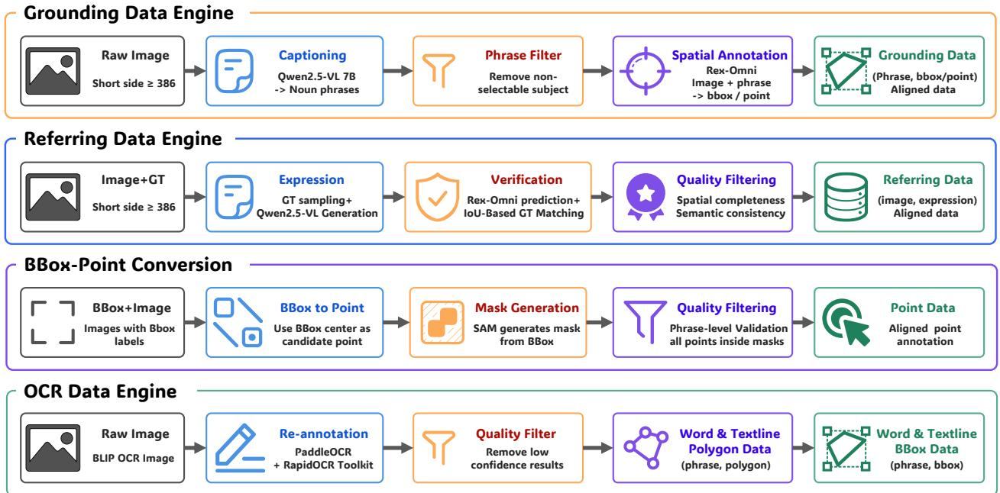
Vision as Unified Multimodal Generation
中高相关；详见方法、贡献和实验边界。
方法：把多种视觉任务统一成文本/图像生成接口，展示通用 VFM 可以不靠专用 head 覆盖 dense 与 symbolic tasks
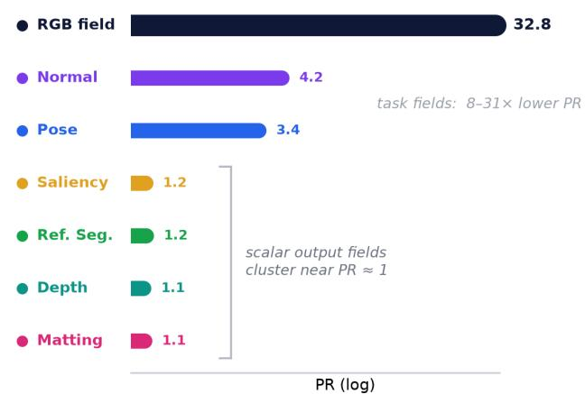
From RGB Generation to Dense Field Readout: Pixel-Space Dense Prediction with Text-to-Image Models
中高相关；详见方法、贡献和实验边界。
方法：直接讨论如何从文本到图像生成预训练中读出 dense fields，关系到生成式 VFM 的空间表征可用性
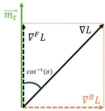
SAMPLe: SAM-based Optimizer for Prompt Learning in VLMs
中高相关；详见方法、贡献和实验边界。
方法：不是 SSL 目标，但直接影响 CLIP/VLM prompt tuning 的泛化，且 comments 标注 ECCV 主会
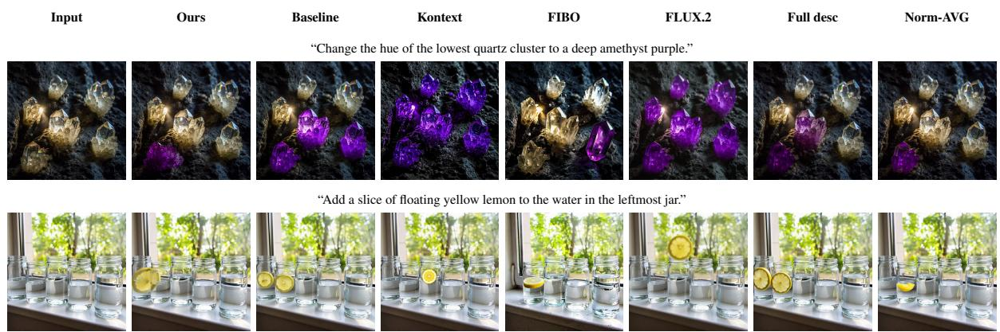
Analysis-by-Proxy: Localization Signals in VLMs Operating as Condition Encoders
中高相关；详见方法、贡献和实验边界。
方法：诊断 VLM 作为 condition encoder 时空间信号是否真正被读出，有助于理解视觉表征在生成编辑管线中的丢失
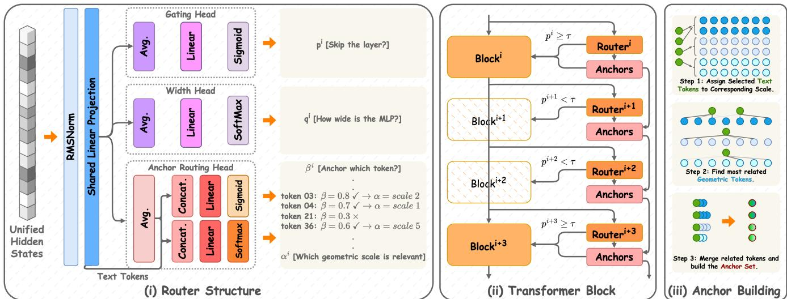
ELSA3D: Elastic Semantic Anchoring for Unified 3D Understanding and Generation
中高相关；详见方法、贡献和实验边界。
方法：通过 scale-aware 3D tokenizer 和 anchor tokens 组织文本-3D 对齐，适合作为 3D VFM/VLM 接口参考
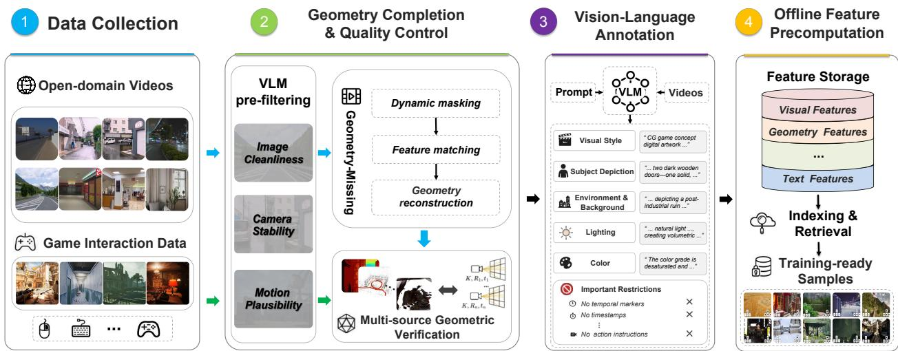
MoWorld: A Flash World Model
中相关；详见方法、贡献和实验边界。
方法：强调 world model 的数据引擎、cross-frame pretraining 和 distillation，方法可迁移但应用偏生成/交互
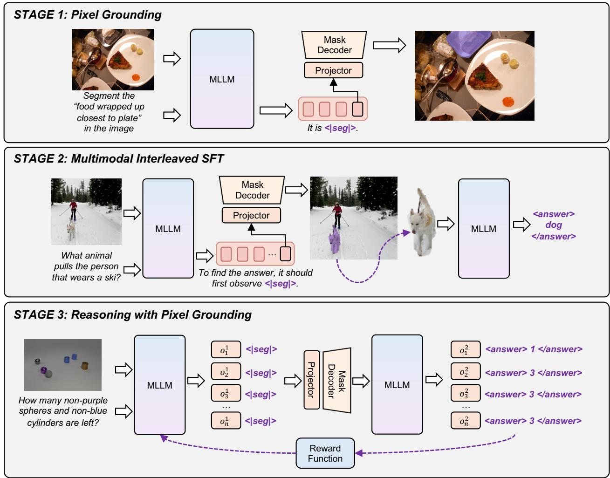
Segmentation before Answering: Pixel Grounding for MLLM Visual Reasoning
中相关；详见方法、贡献和实验边界。
方法：把 MLLM 的 zoom-in 单位从 box 换成 mask，并讨论 segmentation patches 与 visual tokens 的对齐
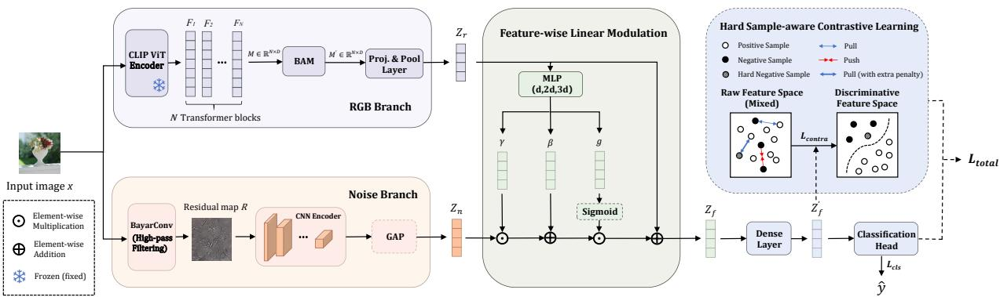
Generalized Synthetic Image Detection with Enhanced RGB-Noise Representation Learning
中相关；详见方法、贡献和实验边界。
方法：任务是生成图像取证，但 RGB-Noise 双分支和 hard-sample contrastive 对鲁棒表征有参考价值
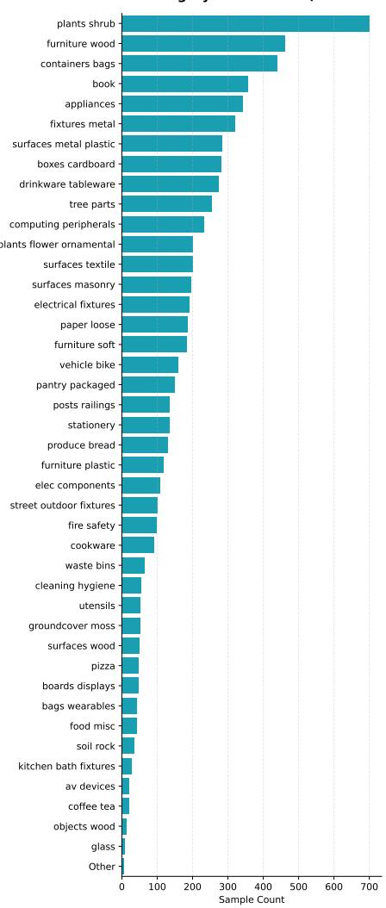
What Images Cannot Say: Language-Guided Olfactory Representation Learning
中低相关；详见方法、贡献和实验边界。
方法：ECCV 状态明确，但核心是气味/电子鼻跨模态学习，和通用视觉自监督只弱相关